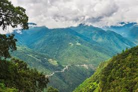
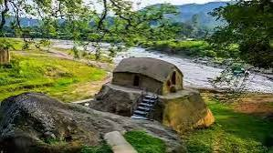
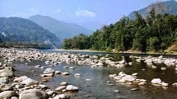
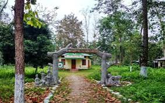

Major Cities and Towns
Guwahati

Kamakhya Temple, Umananda Temple, Assam State Museum, Guwahati Planetarium, Nehru Park, Pobitora Wildlife Sanctuary, Saraighat Bridge, Srimanta Sankardev Kalakshetra.
Jorhat

Majuli Island, Tocklai Tea Research Institute, Hoollongapar Gibbon Sanctuary, Dhekiakhowa Bornamghar.
Tezpur
Agnigarh Hill, Bamuni Hills, Chitralekha Udyan (Cole Park), Mahabhairab Temple.
Sivasagar

Rang Ghar, Talatal Ghar, Sivadol, Joysagar Tank and Temples.
Dibrugarh

Tea Gardens, Dibrugarh University, Jokai Botanical Garden and Germplasm Center, Dehing Patkai Wildlife Sanctuary.
Hill Stations and Scenic Spots
Haflong

Haflong Hill, Haflong Lake, Jatinga, Maibang, Borail Wildlife Sanctuary.
Maibang

Maibang Rajbari, Stone House.
Pilgrimage Sites
Kamakhya Temple

Kamakhya Temple, Guwahati.
Sivadol
Sivadol, Sivasagar.
Natural Attractions
Majuli Island

Majuli Island, the world's largest river island, is known for its unique culture and scenic beauty.
Manas National Park

Manas National Park, a UNESCO World Heritage Site, offers rich biodiversity and stunning landscapes.
Adventure and Eco-Tourism
Bhalukpong

Bhalukpong is known for its adventure activities like trekking, fishing, and river rafting, amidst beautiful surroundings.
Nameri National Park

Nameri National Park offers a pristine environment for birdwatching, river rafting, and trekking.
Historical Sites
Rang Ghar

Rang Ghar, Sivasagar.
Talatal Ghar

Talatal Ghar, Sivasagar.
Wildlife Sanctuaries and National Parks
Kaziranga National Park

Kaziranga National Park, home to the Indian one-horned rhinoceros.
Pobitora Wildlife Sanctuary

Pobitora Wildlife Sanctuary, known for its high density of rhinos.
Other Notable Attractions
Tea Gardens of Assam

The lush tea gardens of Assam are renowned worldwide for their quality tea leaves.
Sualkuchi

Sualkuchi, known as the Manchester of Assam, is famous for its silk weaving industry.